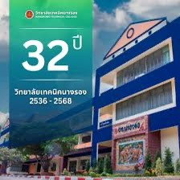

ยินดีต้อนรับสู่แผนกวิชาคอมพิวเตอร์

แผนกวิชาคอมพิวเตอร์ วิทยาลัยเทคนิคนางรอง มุ่งเน้นการจัดการเรียนการสอนด้านเทคโนโลยีคอมพิวเตอร์และสารสนเทศ ทั้งในระดับประกาศนียบัตรวิชาชีพ (ปวช.) และประกาศนียบัตรวิชาชีพชั้นสูง (ปวส.) เพื่อตอบสนองต่อความต้องการของตลาดแรงงานในยุคดิจิทัล
นอกจากภาคทฤษฎีแล้ว แผนกวิชาฯ ยังสนับสนุนให้นักเรียนนักศึกษาลงมือปฏิบัติจริง ผ่านโครงการนวัตกรรมและธุรกิจจำลอง เช่น “COMTECH Service” ภายใต้ศูนย์บ่มเพาะผู้ประกอบการอาชีวศึกษา ที่เปิดให้บริการตรวจซ่อม ประกอบคอมพิวเตอร์ และบำรุงรักษาอุปกรณ์ไอทีให้กับบุคคลทั่วไป เพื่อสร้างรายได้และทักษะประสบการณ์จริงในระหว่างเรียน
หลักสูตรที่เปิดสอนในแผนก
- ระดับ ปวช. สาขาวิชาคอมพิวเตอร์กราฟิก / สาขาวิชาเทคโนโลยีสารสนเทศ
- ระดับ ปวส. สาขาวิชาเทคโนโลยีคอมพิวเตอร์ / สาขาวิชาเทคโนโลยีสารสนเทศ